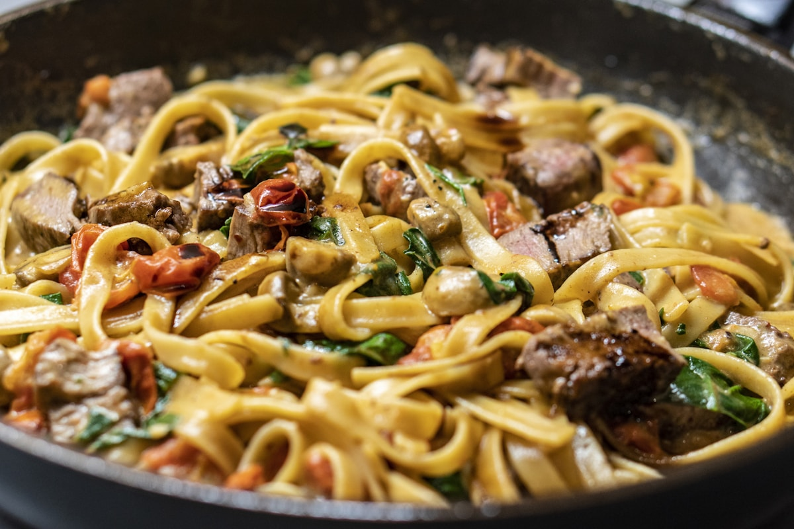
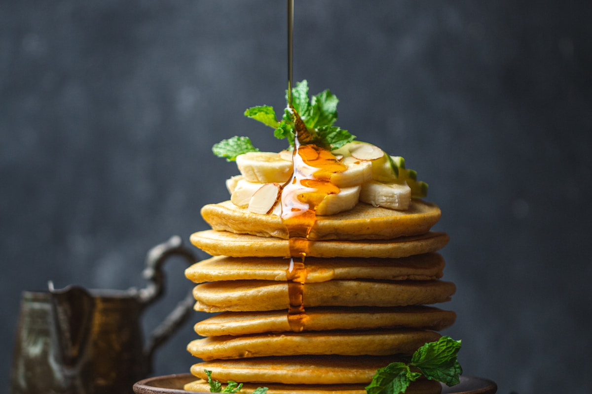

Dinner Gastronomy & Hearth Monographs
Rigorous culinary science, step-by-step artisan techniques, and deep explorations into the art and psychology of evening nourishment.
The Philosophy Behind Our Culinary Monographs
At CozyMealCove, we believe that understanding the why behind culinary techniques is the key to effortless kitchen mastery. Our research monographs are not superficial recipe cards; they are exhaustive deep-dives written for serious home cooks, dinner party hosts, and culinary enthusiasts who wish to understand the physics of collagen breakdown, the rheology of fresh pasta doughs, the thermal retention of cast iron, and the psychological impact of dinner table lighting.
Each monograph published below includes detailed temperature guides, ingredient proportion matrices, step-by-step masterclass instructions, troubleshooting frameworks, and tableside presentation advice to help you transform ordinary evening dinners into extraordinary culinary memories.
Whether you are seeking to master the perfect 4-hour pot roast, roll translucent ribbons of handmade egg tagliatelle, roast post-frost harvest root vegetables, or curate a tranquil candlelit tablescape, our library provides chef-tested knowledge grounded in real culinary science.
Our testing kitchen conducts hundreds of hours of empirical cooking experiments—monitoring moisture retention with digital scales, logging internal meat thermal curves, and analyzing gluten hydration kinetics. We invite you to explore the monographs below and bring artisanal excellence to your home dinner table.

The Art of Slow-Braising & Hearth Cooking
Explore the physical and chemical principles of collagen hydrolysis, Maillard browning, fond deglazing, and the creation of velvet pan sauces in enameled Dutch ovens.
Read Full Monograph →
Farm-to-Table Evening Feasts: Roots & Heritage Grains
A comprehensive study on post-frost starch conversions, dry-roasting techniques for parsnips and winter squash, and grain cookery for wholesome autumn suppers.
Read Full Monograph →
Handcrafted Pasta Dinner Gastronomy: Semolina & Ragù
Master the hydration ratios of stone-ground durum wheat semolina, gluten relaxation mechanics, hand-rolling techniques, and the science of classic 6-hour Bolognese ragù.
Read Full Monograph →
Table Ambience: Lighting, Acoustics & Dining Psychology
How sub-2700K warm candle illumination, acoustic resonance, and tactile ceramic tableware stimulate parasympathetic digestion and elevate conversational intimacy.
Read Full Monograph →
Cast-Iron & Clay Pot Mastery: Thermal Retention Dynamics
Explore the metallurgy and specific heat capacity of raw cast iron, unglazed clay cazuelas, and enameled cookware for crispy-skinned roasts and uniform simmering.
Read Full Monograph →
Botanical Infusions & Ciders: Craft Pairings
Elevate dinner tables with sophisticated cold-macerated fruit shrubs, heirloom sparkling orchard ciders, and wood-smoked mountain teas that cleanse the palate with rich complexity.
Read Full Monograph →How to Navigate Our Culinary Monographs
For home cooks preparing for a special dinner gathering, we recommend starting with our Table Ambience monograph to design your dining environment, followed by the specific core technique monograph (such as Slow-Braising or Handcrafted Pasta). Finally, consult the Botanical Infusions guide to craft an elegant craft beverage pairing that harmonizes with your main course.
Seasonal Recipe Research & Laboratory Testing Standards
Every culinary monograph published by CozyMealCove represents over 60 hours of recipe testing across varying cookware materials, heat sources, and domestic kitchen setups. We measure internal moisture loss with digital scales, verify core temperatures with calibrated thermocouple probes, and optimize ingredient ratios for home cooks.
Our mission is to replace confusing culinary guesswork with clear, reproducible food science and sensory wisdom. We believe that when you understand how collagen dissolves, why semolina gluten relaxes, and how warm lighting calms digestion, you can cook with boundless confidence and create memorable evening dinners for those you love.
Seasonal Editorial Advisory & Future Publications
Our culinary research collective publishes new monographs quarterly to coincide with the changing seasons—from early spring wild green infusions to deep winter game roasts. Each publication undergoes extensive test kitchen trials to ensure precise cooking temperatures, reliable hydration ratios, and extraordinary culinary results.